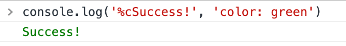

console.log 打印带样式的文字、图片
这篇文章发布于 2020/12/07，归类于 JavaScript
标签：
console.log打印样式文字，console.log打印图片
console.log 的第一个参数中，如果有 '%c'，表示设置样式，会将第二个参数的 css 样式字符串应用到第一个参数的内容中
console.log('%c文字', 'css样式')这样可以打印绿色的文字
console.log('%cSuccess!', 'color: green')
不仅可以设置文字颜色，还可以通过设置 background-color 在控制台显示图片
if (console) {
console.clear();
console.log("%c ", "padding:112px 150px;background:url('https://images.cnblogs.com/cnblogs_com/enumx/1647344/o_200214113324console.gif') no-repeat;");
console.log('%cWelcome', 'color: #0000ff;font-size: 20px;font-weight: bold;');
}效果如下